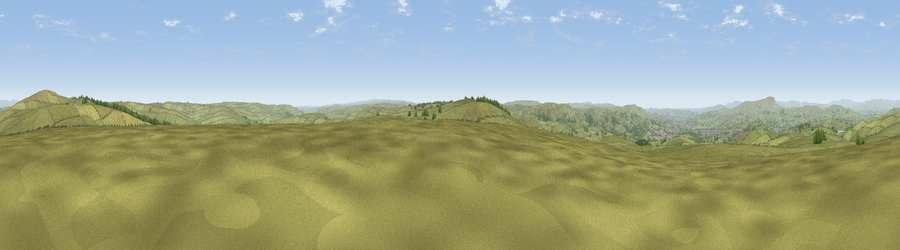

Viewpoint near Worsthorne
#11808 in England · top 16% of its area beats it · near WorsthorneThe view, rendered

A 360° render of this exact spot computed from the terrain model, tree cover and land cover — summer colours, afternoon light, calibrated against photographs of famous viewpoints. Real trees, hedges and buildings will differ in detail.
The panorama
Grey silhouette: terrain skyline in each direction (720 bearings, Earth curvature and refraction included). Dashed green: skyline with trees (+15 m) and buildings (+8 m) as obstacles. Blue strip: how far the ground is visible on each bearing.
Where the view opens
Wedge length = distance to the farthest visible ground on that bearing (vegetation-aware). Rings at 10, 25 and 50 km.
What fills the view
88% grassland · 8% woodland · 4% built-up
Angular shares of the visible panorama (visual magnitude), not map area. Landscape diversity 0.20 (0–1 Shannon).
Key numbers
More beautiful places nearby
The staircase of upgrades: each row has a higher view potential than everything closer. Driving times are estimates from straight-line distance, calibrated against real road routing — check an actual route before setting out.
| Place | Direction | Drive | Score |
|---|---|---|---|
| Lad Law (Boulsworth Hill) | NNE · 3 km | ~8 min | 71.5 |
| Great Hameldon | WSW · 13 km | ~24 min | 74.2 |
| Pendle Hill | NW · 14 km | ~26 min | 76.5 |
| Viewpoint near Edenfield | SW · 17 km | ~29 min | 77.5 |
| Darwen Hill | WSW · 26 km | ~42 min | 80.7 |
| White Brow | SW · 33 km | ~50 min | 82.9 |
| Warton Crag | NW · 59 km | ~81 min | 83.2 |
| Viewpoint near Grange-over-Sands | NW · 69 km | ~93 min | 83.4 |
53.78898, -2.12481 · source: screening · position refined by local search. Computed location — check access rights before visiting.